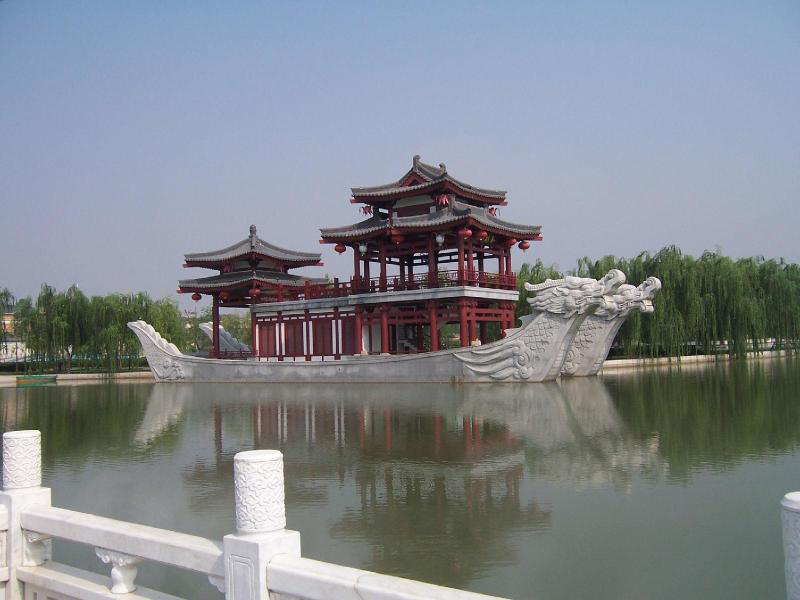

西安大唐芙蓉园是中国第一个全方位展示盛唐风貌的大型皇家园林式文化主题公园，国家5A级旅游景区，位于西安市城南的曲江开发区，于2004年建成。西安大唐芙蓉园内有紫云楼、御宴宫、唐市等仿古建筑，还有全球最大户外香化工程和全球最大的水幕电影表演，晚上的芙蓉园华灯齐上，更显繁华。
帝王文化区，水秀表演区，歌舞文化区，饮食文化区，民俗文化区，女性文化区，品茶文化区，科举文化区，诗歌文化区，外交文化区，儿童娱乐区。
玄宗插花赏苏颋 皇帝芙蓉园游宴时，赋诗成为时尚，每有好诗不仅可以得到皇上的嘉奖，同僚的羡慕，而且马上传遍长安朝野，变得妇孺皆知。《开元天宝遗事·天宝下》记载这样一些趣事：“长安春时，盛于游赏，园林树木无闲地。故学士苏颋《应制》云：飞埃结红雾，游盖飘青云。帝览之嘉赏焉，遂以御花亲插颋之巾上，时人荣之。”说苏颋随玄宗皇帝春游芙蓉园，在紫云楼观赏万民游曲江盛景，但见尘埃轻飘与烟水红花相映，结成红雾，游人幄帐成片，彩绸飘扬无边无际直接青云。于是，用诗表现了出来，深得上皇之心，得到了玄宗亲自插花的嘉赏。
芙蓉阙下樱桃宴 王维《敕赐百官樱桃》诗曰：“芙蓉阙下会千官，紫禁朱樱出上兰。才是寝园春荐后，非关御苑鸟衔残。归鞍竞带青丝笼，中使频倾赤玉盘。饱食不须愁内热，大官还有蔗浆寒。”据考，此诗写于天宝十一年（752年），樱桃宴在每年的四月一日举行，皇帝禁苑的樱桃是新年最先成熟的水果，皇帝荐祖 后大摆樱桃宴，遍赐群臣。 “芙蓉园中樱桃宴”给人留下了深刻印象，唐代诗人丘丹在回忆长安的四月时，就特别歌咏到这件事：“忆长安，四月时：南郊万乘旌旗。尝酙玉卮更献，含桃丝笼交驰。芳草落花无限，金张许史相随。”南郊即是南苑，指芙蓉园。在四月初一这一天，皇帝率百官千骑，来南郊芙蓉园赐宴，盛满美酒的玉杯连续敬献，装有新鲜樱桃的丝笼不断送来。在这芳草铺地落英缤纷的时节，君臣尝新饮宴，令人难忘，是唐代诗人忆长安四月时最先想到的事情。
芙蓉园中看花 从唐玄宗时代开始，“芙蓉园中看花”——皇帝游幸芙蓉园成为一种经常性的活动，春夏秋三季似乎每季都有，尤其是在二、三、四三个月中，更形成了基本固定的游赏日期。二月一日中和节，皇帝驾幸芙蓉园，欣赏早春之景；三月三日上巳节是曲江胜游的高潮，皇帝此时登临芙蓉园紫云楼，观百官、万民同乐之景；四月一日的樱桃宴也多在芙蓉园内举行。皇帝游幸芙蓉园都是从东垣夹城潜行来回的，外面的人不能看到皇帝的游赏队伍，只能听见那轰隆隆的车辇声音，还可以闻见从夹城中飘过来的大批嫔妃宫女留下的阵阵香气。杜甫《乐游园歌》诗曰：“青春波浪芙蓉园，白日雷霆夹城仗”，描写的是前者；杜牧《长安杂题》诗云：“南苑芳草眠锦雉，夹城云暖下霓旄，六飞南幸芙蓉园，十里飘香入夹城”，说的是后者。
杏园探花 杏园探花的故事源于唐代芙蓉园中的杏园，唐代及第进士参加吏部的关试后，要进行许多次的宴集，这许多次的宴集总称“关宴”，杏园探花宴是其中的重要活动之一。 进士发榜后，新科进士在杏园初次聚会，称为探花宴。杏园宴中的探花游戏，是由大家推选两名年轻英俊的进士充当探花使，由他们骑马遍游曲江附近乃至长安各大名园，去寻觅新鲜的名花，并采摘回来供大家欣赏。
曲江流饮 在西安碑林，有一块刻于公元1680年（清康熙十九年）的碑石，刻诗描绘了当时长安八景之一曲江流饮的奇丽秀美。在唐政府选拔官员的科举考试中，进士考试是科举中最难的一科。除通过礼部每年春季举行的全国笔试外，还要经过几道测试才能踏上仕途。正所谓“三十老明经，五十少进士”，可见之难。“岁岁人人来不得 ,曲江烟水杏园花”，而举子们一旦中第，对这样一件关乎个人、门庭荣辱的大事，自然是要好好庆祝一番的，庆祝的形式就是曲江大会，也称曲江宴。又因举行宴会的地点一般都设在当代芙蓉园杏园曲江岸边的亭子中，所以也叫“杏园宴”。每逢上巳日（农历的三月三日），正赶上唐代新科进士正式放榜之后，踏着仲春的草色，踏青赏春 阳光明媚。每当新科进士及第总要在这里乘兴作乐，放杯至盘上，放盘于曲流上随水转，按照古人“曲水流殇”的习俗，酒杯流至谁前谁就要执杯畅饮，并当场作诗，由众人对诗进行评比，称为“曲江流饮”。